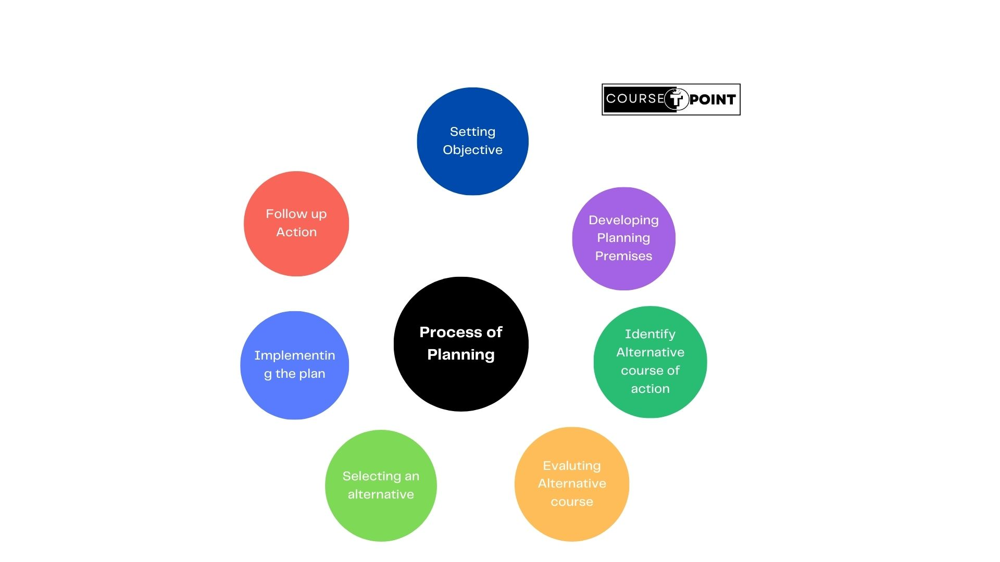
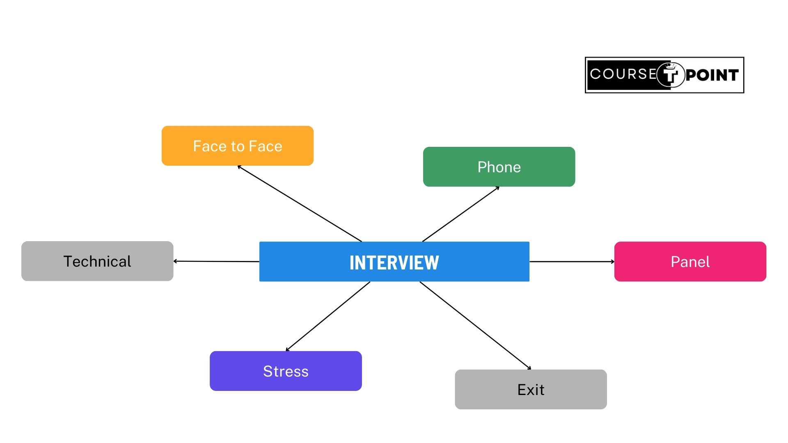
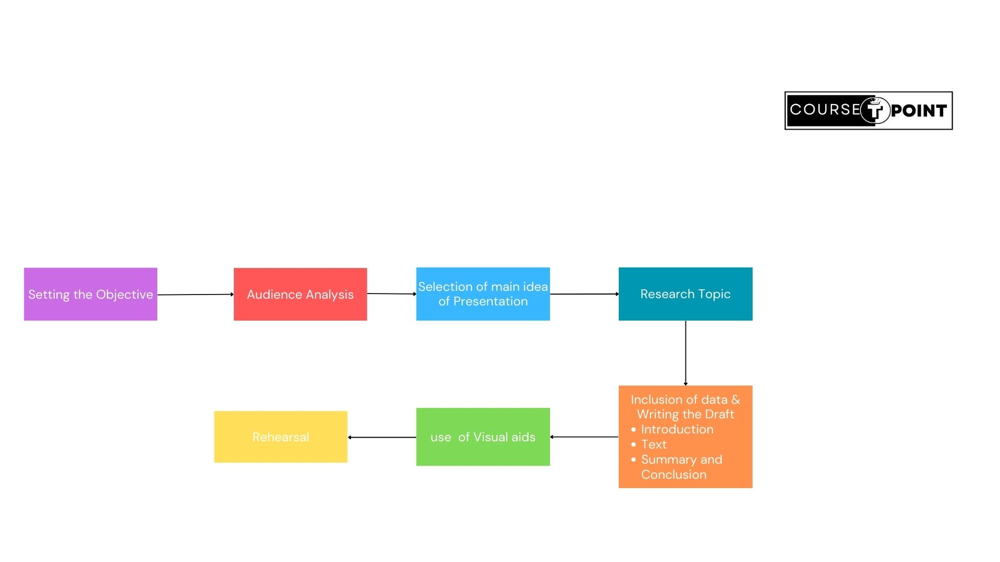
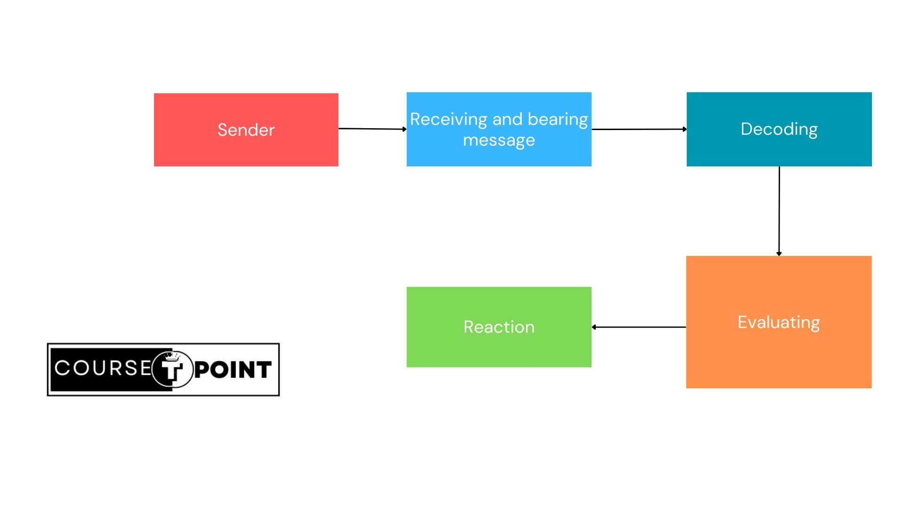

Principle Of Business Communication
| Table Of Content | |
|---|---|
Business Communication
Business refers to Buying and selling manufacturing of goods and services and communication refers to a process in which we can exchange, ideas, Opinion, view between two or more person. So the communication which take place regarding the business activities then it is called Business Communication.
It is used for all messages that we send and recieve for official purpose like-running a business, managing an Organization,conducting the formal affairs of an Organization.It Include both Writen and oral Communication letters, report, memos, Notice are all formal and part of Commerical and Business Communication.
Importances
- Effective Collaboration: Business communication facilitates collaboration among team members, departments, and stakeholders. Clear communication ensures that everyone is aligned with organizational goals, leading to improved teamwork and productivity.
- Enhanced Decision Making: Effective communication provides essential information and data required for making informed decisions. It allows leaders and managers to assess situations, analyze options, and develop strategies that drive business growth and success.
- Customer Satisfaction: Communication is essential for understanding customer needs, preferences, and feedback.
- Innovation and Problem-Solving: Communication fosters creativity and innovation by encouraging the exchange of ideas, insights, and perspectives.
- Risk Management: Communication helps businesses identify and mitigate risks by facilitating the exchange of information about potential threats, challenges, and opportunities.
7C's Effective Communication

- Clarity: The message should be Clear and easily understandable to the recipient. The purpose of the communication should be clear to sender then only the receiver will be sure about it. The message should emphasize on a single goal at a time and shall not cover several ideas in a single sentence.
- Correctness: The message should be correct, i.e. correct language should be used, and proper information provide by the sender. There is no grammatical and spelling mistake.
- Consideration: The sender must take into consideration receiver's Opinion, knowledge, mindset, background etc. In order to have an effective communication. In order to communicate, the sender must relate to the target recipient and involved.
- Conciseness: The message should be precise and to the point. The sender should avoid the lengthy sentences and try to convey the subject matter in the least possible words. The short and brief message is more coprehensive and helps in retaining the receiver's attention.
- Completeness: The message should be complete, i.e. it must include all the relevant information, gives answer to all the questions of the receiver and helps in the better decision-making by the recipient.
- Courtesy: It implies that the sender must take into consideration both the feelings and viewspoints of the receiver such that the message is positive and focused at the audience.
- Concreteness: The Communication should be concrete, which means the message should be clear and particularly is left. All the facts and figures should be clearly mentioned in a message so as to substantiate to whatever the sender is saying.
Planning
Planning is as Intellectual process of thinking resorted to decide a course of action which help to achieve the pre-determined Objectives of the Organization in future.
Acc. to "Koontz and O'Donnell" : Planning is deciding in advance what to do, when and how to do and who is going to do it.
Planning in business communication involves strategically organizing and preparing how information will be conveyed within and outside the organization to achieve specific business objectives. This planning process ensures that communication efforts are aligned with the overall goals of the company and effectively support its operations, growth, and success.
Characteristics of planning
- Identifying Objectives: Clearly define the objectives and purpose of the communication. Determine whether the goal is to inform, persuade, educate, motivate, or engage stakeholders within or outside the organization.
- Understanding the Audience: Conduct audience analysis to understand the characteristics, preferences, needs, and expectations of the target audience.
- Selecting Communication Channels: Choose the most appropriate communication channels to reach the target audience effectively.
- Developing a Communication Plan: Create a structured communication plan that outlines the goals, strategies, tactics, timelines, and responsibilities for communication activities. Ensure that the plan is realistic, flexible, and aligned with the overall business strategy.
- Risk Management: Identify potential risks or pitfalls in communication and develop contingency plans to mitigate their impact.
Process of Planning
- Setting Objective:Every Organization works to achieve some Objectives. So the first step of the planning is to define and describe the Objective of the Organization.And Once the Objective is decided then these objectives should be Communicated to all units and Employees.
- Developing Planning Premises: Planning is concerned with the future, which uncertain and manager assumes about what might happen in future.Therefore the manager is required to make certain assumption About the future.
- Identify alternative course of Action: Once the Objectives and planning premises are establish, It became necessary to Identify and developing different alternative used to achieve the established Objective.
- Evaluating Alternative Course of Action: After that the next step is to achieve the pro and cons of each alternative. It is important to evaluate the negative and Positive aspect of each alternative to achieve the objective.
- Selecting an Alternative: After the evaluating the alternative course of active the next step to select the best one to achieve desire Objective. The best plan has to be adopted and implemented.
- Implementing the Plan:The main role of this step to put the plan to action and do what is required.
- Follow-up Action: Since, Planning is the continuous process so the managers Keep on following up the plans to ensure that all the activities should be performed as per the schedule.
Interview
Basically an Interview is a Conversation between two person(The Interviewer and Interviewee) Where the Question are asked by the interviewer to obtain the Information from ther Interviewee.
The Interview is two way process that gives the opportunities to the employer to judge the Personality of a person.It Include your attitude, appearance, Confidence and knowledge to the job.
The conducting an Interview one should follow the phase indicating in the planning:
- Plan for Interview
- Establish Report
- State the purpose
- Ask Question
- Summarize the final Report
Needs of Interview
- To judge the overall Personality of the candidate.
- To Know the wheter you able to perform the required job or not.
- To judge the skills and attributes which are not mentioned in C.V.
- Apart from your knowledge your Ability and capacity to do the job.
Types of Interview
- Face To Face Interview: It is Traditional and most common type of Interview. In This type of Interview the candidate and the interviewer face to face. This method enables to acquire factual information, attitudes, prefernces and other information coming out during the Conversation with the respondent.
- Phone Interview: Phone Interview take place if a job applicant is a significant distance away from the premises of the hiring company such as abroad or in another state.
- Panel Interview: Panel means a selection committee that is appointed for interviewing the candidate. Panel may include three to five person. Final decision are taken by all members collectively by rating the candidates.
- Exit Interview: When an employee leaves the company. He/She is interviewed either by his immediate superior or by the manager. This is called exit Interview.Exit Interview is taken to find out why the employee is leaving the company.
- Stress Interview: The Interview, attempts to find how applicants would respond to aggressive, embarrassing, rude and insulting question. A stress interview allows interviewers to see how well you work under pressure.
- Technical Interview: This kind of interview focuses on problem- solving skills and creativity. The Question aim to your Problem-Solving skills and likely shows your ability and creativity.
Discussion
Discussion is a form of communication where individuals or groups exchange ideas, opinions, information, and perspectives on a particular topic or issue. It involves a collaborative and interactive process where participants engage in dialogue, debate, or conversation to explore different viewpoints, share insights, and reach a deeper understanding of the subject matter.
- Exchange of Ideas: Discussion allows participants to share their thoughts, experiences, and knowledge related to a topic.
- Critical Thinking: Discussion promotes higher-order thinking skills and encourages individuals to question, analyze, and synthesize information.
- Active Listening:Effective discussion involves active listening, where participants pay attention to others' viewpoints, ask clarifying questions, and seek to understand different perspectives.
- Engagement and Participation: Discussion encourages active participation from all participants, creating an inclusive environment where everyone has the opportunity to contribute their ideas and insights.
Difference Between Interview and Discussion
| S.NO | Interview | Discussion |
|---|---|---|
| 1 | Interviews may held by some companies for periodic evaluating of workers which leads to sure results. | Discussion may or may not lead to a result. |
| 2 | Both the parties need to prepare for the communication events. | Both the parties not necessary may prepare for the discussion. |
| 3 | All the interview are pre-arranged. | Most of time discussion are not pre-arranged |
| 4 | There is clear exchange of information. | The information exchange may be an idea or thought. |
Presentation/Oral Statement
'Presentation' means speaking to listener or a group of listener with duly-prepared lecture, which is a suitable to listners and the objectives of the related subject.
In Organization, when new or existing projects are discussed, presentation is done to solve coming issues and to manage the work. Intensive advertisement campaigns like road shows, door to door customer meets, visits to professionals are the type of presentation.
Oral statement or presentation is a form of Oral communication. It means the presentation of an oral message to a listener or a group of listener.
Objectives
- To advertise and promote a product.
- To create an image or goodwill.
- To decide the future course of action.
- To present a report of the body.
- To suggest a solution to a problem.
Process of Presentation
- Setting the Objective: First of all it is necessary to know whether the objective of Oral presentation is to give information to encourages or to entertain.
- Audience analysis:After setting the objective it is necessary to identify the audience. It is very important to know the average age of the audience, its in business, its interest the reason for their presence at the presentation
- Selecting the Main Idea of the presentationa:The third step in the process of presentation is identifying the main idea or the main.
- Research the Topica: The next steps in the presentation that is necessary is that various information related to the factors, figures etc. should be collected.
- Inclusion of data writing the draft: When the facts and figures have been
collected, the first draft the presentation should be prepared which should include the
collected information.
- Intoduction
- Text
- Summary and Conclusion
- Use of Visual Aids: The Next step after the preparing the draft of the presentation is to decide which visual Aids will be used during the presentation.
- Rehearsal: The purpose of rehearsing the presentation is to increase the Confidence and learn the subject matter. Because of this the presenter remain in a comfortable state during the presentation.
Effective Listening
Effective listening is a crucial skill that involves fully concentrating, understanding, responding appropriately, and remembering the information conveyed by the speaker. It goes beyond simply hearing words to comprehending the underlying message, emotions, and intentions behind the communication
- Built deep trust
- Strengthens your patience
- Make your approachable
- Save time and Money
- Helps detect and solve problems
Types of Listening
- Discriminative Listening: When the listener differentiate between different parts of the speaker messages.
- Evaluating Listening: Listening is said to be evaluated when the listner evaluates the evidence and reaches a conclusion.
- Appreciative Listening: Here the listener shows by words or his body language that he likes some parts of a speech and agress with the speaker.
- Empathic listening: When the listner puts himself in the place of the position of the speaker it is called emphatic listening.
- Active Listening: When the listener genuinely interested in understanding what the other Person is thinking, feeling, wanting or what the message means, and active in checking out our Understanding it is called active listening.
Listening Process
Telephonic Communication
The Telephone is one of the most commonly used mean of oral communication. elephonic communication, also known as telephone communication, involves the exchange of information, ideas, or messages between individuals or groups using telephones or mobile phones. Like any form of communication, telephonic communication has both merits and demerits:
Merits
- Immediate Response
- Convenience
- Personal Connection
- Clarity of Communication
- Cost-Effective
Demerits
- Lack of Visual Cues
- Ineffective for Complex Issues
- Dependency on Technology
- Privacy and Security Concerns